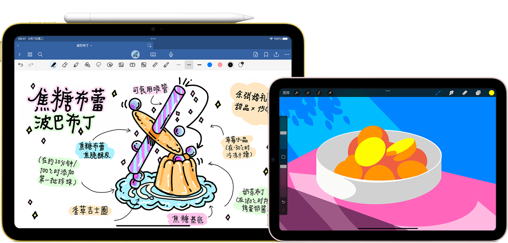

Apple Pencil
USB‑C
RM 349
购买Apple Pencil (USB‑C) 拥有像素级精准度、低延迟和倾斜角度感应，就像用笔在纸上书写一样自然顺畅，适合做标注、记笔记与绘图。
支持悬停功能，落笔前即可预览。可通过 USB‑C 接口进行配对和充电，并可磁力吸附在 iPad 边框以便收纳。
适用于
- 13 英寸 iPad Pro (M4)
- 11 英寸 iPad Pro (M4)
- 13 英寸 iPad Air (M2 或 M3)
- 11 英寸 iPad Air (M2 或 M3)
- iPad mini (A17 Pro)
- 12.9 英寸 iPad Pro (第 3–5 代)
- 11 英寸 iPad Pro (第 1–4 代)
- iPad Air (第 4 或第 5 代)
- iPad (第十代)
- iPad (第九代)
